El pasto electrostático de 2mm Mini-Nature esta pensado para su aplicación en Wargaming y modelos en escalas cercanas a 1:50 o más pequeñas.Mini-Nature 2mm Static Grass is designed for it's application in Wargaming and models on scales close to 1:50 or smaller.
Al igual que el resto de nuestros productos, el Pasto Electrostático de 4mm Mini Nature tiene diversas aplicaciones, por ejemplo, crear los clásicos matojos de pasto.Like the rest of our products, Mini-Nature 4mm Static Grass has multiple applications, for example, creating classic grass toufts.
¡A alguien se le olvidó cortar el pasto! El pasto electrostático de 6mm. tiene variadas aplicaciones, tanto para figuras en escalas cercanas a 1:16 como en figuras que rodean la 1:48.Someone forgot to mow the lawn! 6mm Static Grass has various applications, both for 1:16 figures, as for figures surrounding 1:48 scale.
Nuestro Pasto Electrostático de 10mm es ideal para su aplicación en modelos y figuras cuya escala es superior a 1:32. La pintura acrílica se adhiere perfectamente al pasto Mini-Nature.Our 10mm Static Grass is ideal for it's application in models and figures which scale is greater than 1:32. Acrylic paint adheres perfectly to the Mini-Nature pasture.
Autumn
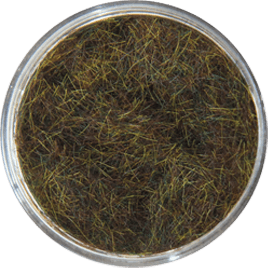
Winter
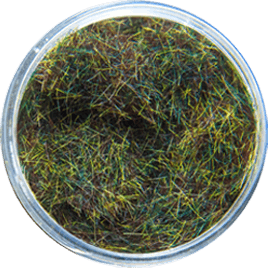
Spring
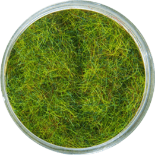
Summer
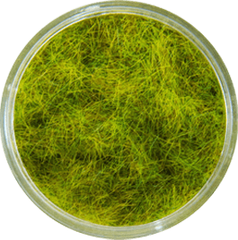
Green
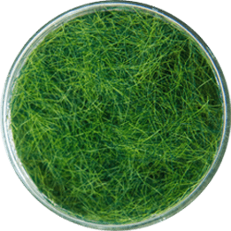
Yellow
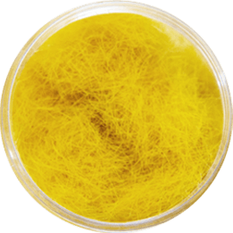
Balasto 50ml.(Ballast 1.7 oz.)
El Balasto es comunmente utilizado como piedras o gravilla en figuras y dioramas. Disponible en Large (L), Medium (M) y Small (S) para su uso en distintas escalas.Ballast is commonly used as crushed stones or gravel in figures and dioramas. Available in Large (L), Medium (M) and Small (S) for it's use in different modelling scales.
Light Brown (L, M & S)
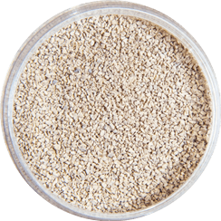
Brown (L, M & S)
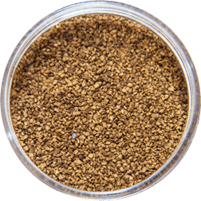
Gray (L, M & S)
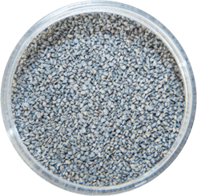
Black (L, M & S)
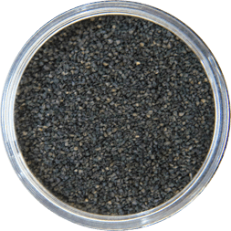
River (L)
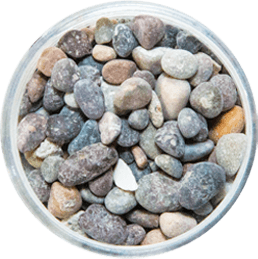
Líquen 100ml.(Lichen 3.4 oz.)
Un favorito dentro del hobby. Su textura única se mezcla fácilmente con el paisaje. Suele utilizarse como arbusto, follaje de árbol, y para cubrir terreno en cualquier escala.A favorite within the hobby. I'ts unique texture blends easily in landscape. Usually used as shrub, tree foliage, and cover for any terrain on any scale.